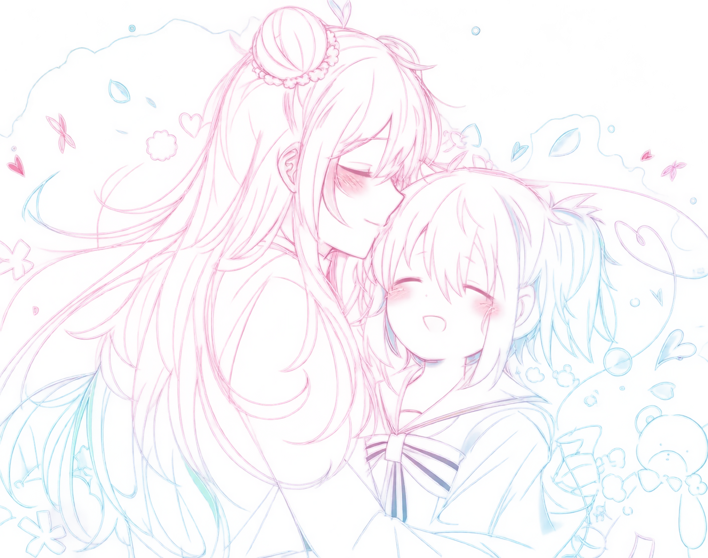

ABOUT
关于夜航手记
c1nical
编程、电子音乐，还有散步时遇到的小事。
写在这里
「夜航手记」是一份可以慢慢翻的个人笔记。编程笔记从具体的小问题出发，声音实验记录音色是怎么变出来的，日常随笔留给路上的观察。
阅读与订阅
你可以按时间翻阅归档，通过标签寻找相近的话题，或者把喜欢的文章收藏在当前浏览器里。搜索支持标题、标签与正文。
订阅博客 RSS建站说明：首批文章为展示版面与写作方式的示例稿。

编程、电子音乐，还有散步时遇到的小事。
「夜航手记」是一份可以慢慢翻的个人笔记。编程笔记从具体的小问题出发，声音实验记录音色是怎么变出来的，日常随笔留给路上的观察。
你可以按时间翻阅归档，通过标签寻找相近的话题，或者把喜欢的文章收藏在当前浏览器里。搜索支持标题、标签与正文。
订阅博客 RSS建站说明：首批文章为展示版面与写作方式的示例稿。